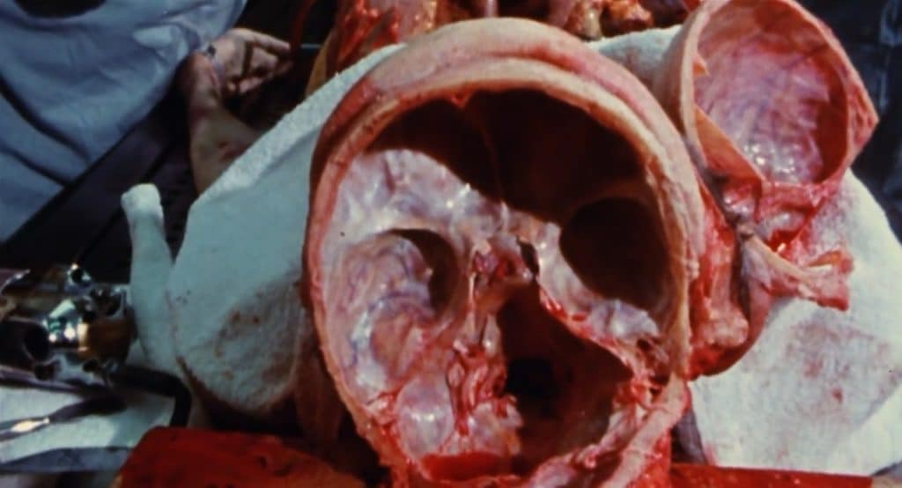

Bootleg Tapes
Unearth Here.
Resistant or nonconformist visual matter disappeared from the surface into an underground of alternative archives and collections, kept alive only by a network of committed organizations and individuals, who would circulate bootlegged VHS copies among themselves.
Sources for these were extremely rare—tapes moved from hand to hand, depending on word of mouth, within circles of friends and colleagues.
Rewind Here.
Fast Forward Here.